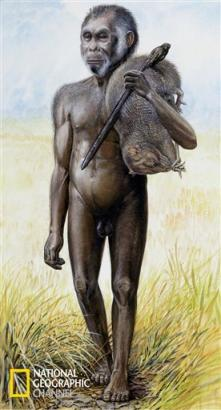
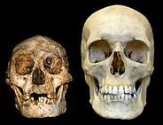

Professor Chris Stringer, Head of Human Origins
at
taken from a
skull of Homo
floresiensis
during a news conference in
Flores Man may be a
new species in the evolution of humans. (AP
Photo/Richard
Lewis)
